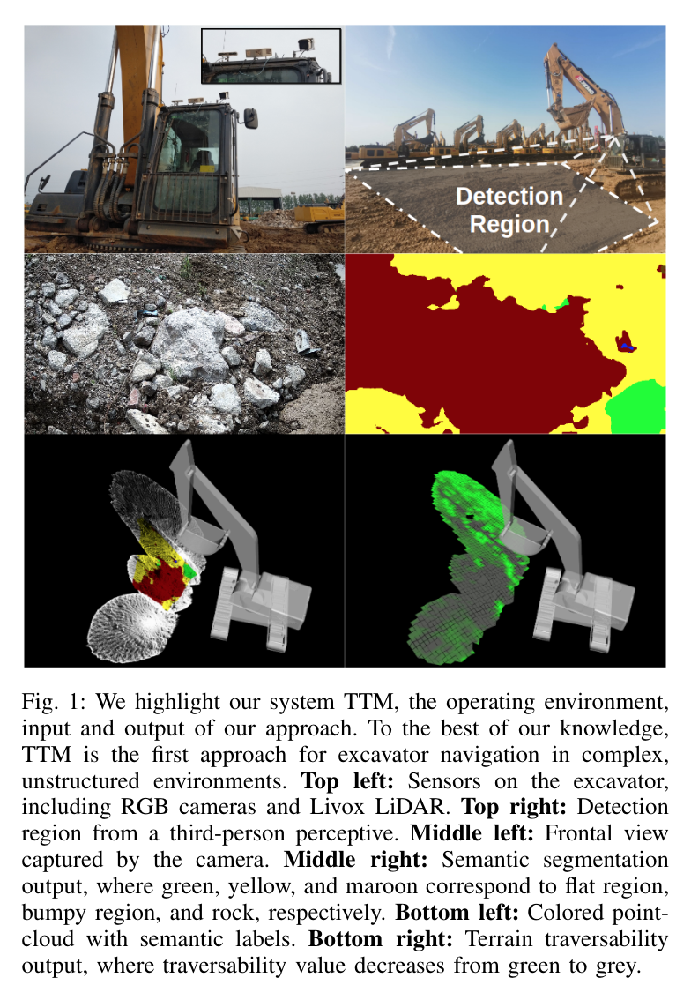
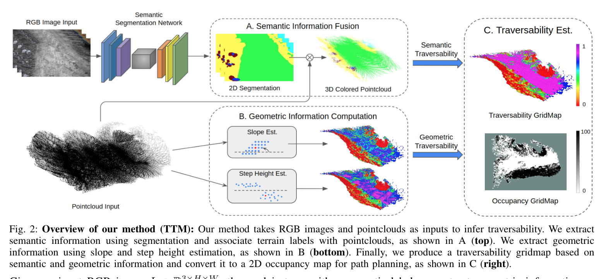
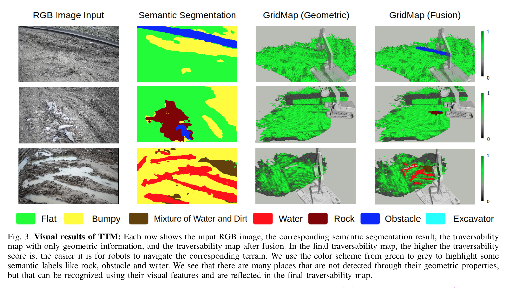
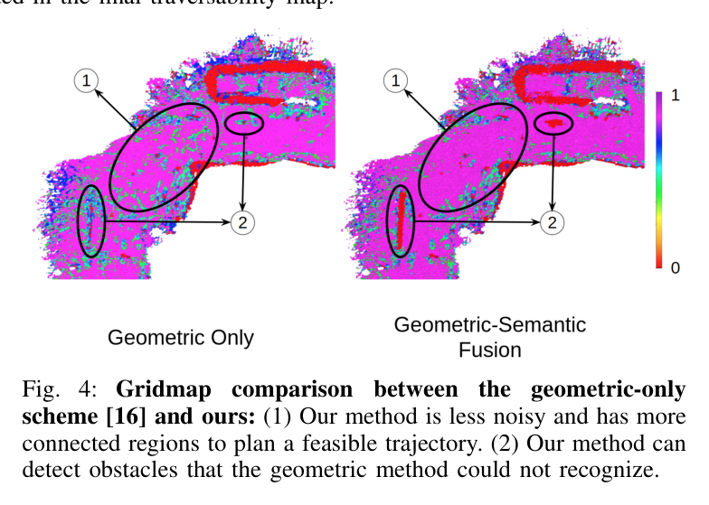
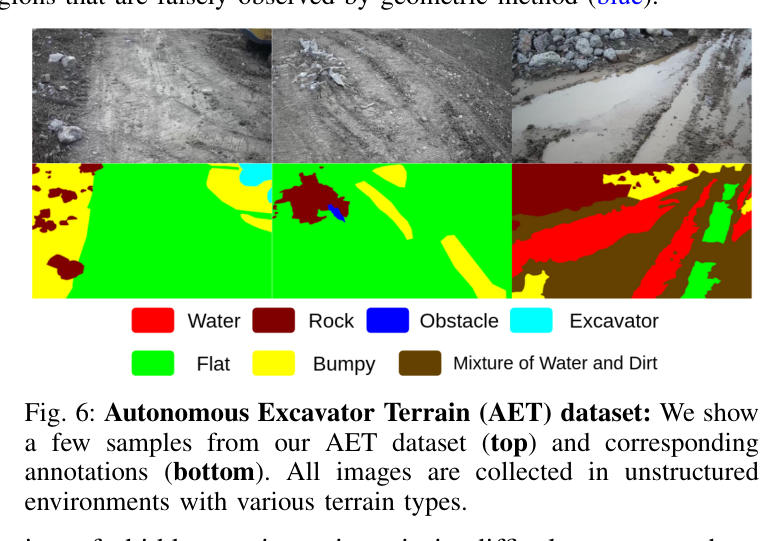
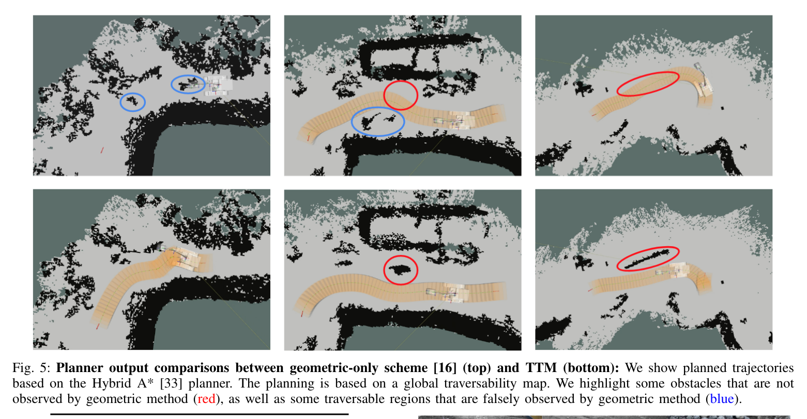
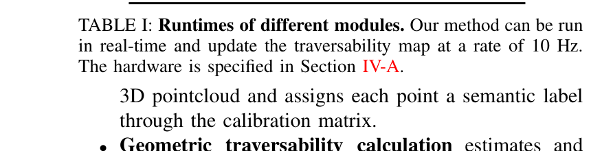

한줄 요약 — TTM은 의미 분할이 구별하는 물·암석·장애물과 LiDAR가 측정하는 경사·단차를 장비별 안전 한계로 융합해 대형 굴착기의 전역 비용지도를 구성한다. CWT에서 Fast-SCNN mIoU 68.75%, overall accuracy 84.49%를 얻고, 90회 이상 현장 시험에서 계획 성공률을 기하 지도 33.3%에서 82.6%로 높였다.
1.연구 배경 및 동기
굴착기 사양을 반영하는 실시간 주행성 지도
비정형 건설현장에는 평평한 토사, 거친 노면, 물, 암석, 장애물, 다른 건설기계가 같은 작업 구역에 나타난다. 기하 센서만으로는 평평한 물과 단단한 지면을 혼동할 수 있고, 영상 분할만으로는 경사와 단차가 굴착기의 물리 한계를 넘는지 알 수 없다. TTM은 이 두 종류의 증거를 장비 규격에 맞춘 하나의 traversability map으로 결합하는 문제를 다룬다.
논문은 지도 생성 자체에 초점을 맞춘다. RGB에서 얻은 7개 의미 클래스와 LiDAR 고도 격자에서 계산한 경사·단차를 0에서 1 사이 점수로 융합하고, 전역 지도를 10 Hz로 갱신한다. 그 뒤 동일 저자들의 Hybrid A* 계획 및 제어 스택에 지도를 연결해 실제 49톤 XCMG XE490D가 깊은 구덩이, 언덕, 암석 더미 주변을 우회할 수 있는지 확인한다.
평가 목표는 단순한 영상 정확도에 머물지 않는다. 저자들은 약 30분의 현장 영상으로 AET 데이터셋을 만들고 의미 분할 성능과 모듈별 실행시간을 측정한 뒤, 기하 전용 지도와 융합 지도에서 계획 성공률을 비교한다. 이를 통해 지도 표현의 선택이 실제 굴착기 경로 생성의 성패를 어떻게 바꾸는지 보여준다.

원문 Figure 1 · PDF p.1 — Fig. 1: We highlight our system TTM, the operating environment, input and output of our approach. To the best of our knowledge, TTM is the first approach for excavator navigation in complex, unstructured environments. Top left: Sensors on the excavator, including RGB cameras and Livox LiDAR. Top right: Detection region from a third-person perceptive. Middle left: Frontal view captured by the camera. Middle right: Semantic segmentation output, where green, yellow, and maroon correspond to flat region, bumpy region, and rock, respectively. Bottom left: Colored point- cloud with semantic labels. Bottom right: Terrain traversability output, where traversability value decreases from green to grey.
선행 연구의 한계
기하 기반 지도는 표면 형태가 비슷한 물과 평지, 완만한 토사와 느슨한 암석을 의미적으로 구별하지 못한다.
의미 기반 지도는 카메라 외관에 의존하며 굴착기의 등판각과 허용 단차를 직접 계산하지 못한다.
소형 이동로봇에서 정한 장애물 임계값은 궤도 폭과 질량이 큰 굴착기에 그대로 적용하기 어렵다.
정확한 지도가 생성돼도 경로계획과 연결하지 않으면 임무 성공률 개선을 실차에서 확인할 수 없다.
이 연구의 기여
RGB 의미 분할과 LiDAR 기하 분석을 결합한 굴착기용 실시간 terrain traversability mapping 방법을 제시했다.
XE490D의 궤도 폭, 등판 능력, 안전 경사와 단차를 점수 함수와 후처리 기준에 반영했다.
건설현장 7개 클래스를 포함하는 AET 데이터셋을 구축하고 Fast-SCNN 분할 성능을 보고했다.
90회 이상의 실차 계획 시험으로 융합 지도가 기하 전용 지도보다 높은 경로 생성 성공률을 보임을 확인했다.
2.방법론 및 시스템 구성
TTM의 입력은 보정된 RGB 영상과 LiDAR 점군이다. Fast-SCNN이 영상의 지형 의미를 분할하고, 카메라 내·외부 파라미터를 통해 점군을 영상에 투영하여 각 점에 클래스 레이블을 부여한다. 동시에 최근 N개의 점을 고도 격자에 누적하고 국소 공분산의 최소 고유벡터로 표면 법선을 구해 경사를 계산한다. 궤도 접지 범위를 반영한 이웃에서 최대 높이차를 단차로 사용한다.
경사와 단차는 안전값 이하이면 완전 주행 가능, 임계값 이상이면 통행 불가, 그 사이는 두 물리량의 가중합으로 연속 감점된다. 의미 융합에서는 암석, 굴착기, 장애물, 물을 0으로 만들고 평탄 클래스는 기하 조건이 허용할 때 1로 둔다. 작은 고립 위험 영역은 높이와 x·y 범위를 검사해 센서 잡음인지 판별하며, 누적된 격자는 전역 좌표계에서 10 Hz로 제공된다.
처리 파이프라인
1
1. RGB·LiDAR 보정
Livox Mid-100과 전방 RGB 카메라 사이의 외부 파라미터 및 카메라 내부 파라미터를 사용해 점군과 영상을 공통 관측으로 정렬한다. RTK 자세는 지역 격자를 전역 좌표에 누적하는 기준이다.
2
2. 현장 의미 분할
Fast-SCNN이 1920×1080 영상을 flat, bumpy, water, rock, obstacle, excavator 등 AET의 7개 클래스로 분할한다. 실시간성을 위해 경량 네트워크를 선택하고 분할 결과를 후속 3차원 투영에 전달한다.
3
3. 픽셀 의미의 점군 투영
각 LiDAR 점을 카메라 좌표로 변환하고 영상 평면의 대응 픽셀을 찾아 의미 레이블을 복사한다. 평균 42.3 ms가 걸린 이 단계가 2차원 클래스와 거리·위치를 가진 3차원 지점을 결합한다.
4
4. 고도 격자와 표면 법선
최근 N개 점을 일정 크기 격자에 저장하고 각 점 주변의 공분산 행렬을 고유분해한다. 최소 고유값에 대응하는 벡터를 법선으로 간주하고 z축과의 각도를 경사로 계산한다.
5
5. 궤도 규모 단차 계산
격자 해상도 0.2 m와 궤도 폭 0.6 m를 고려해 7×7 이웃, 즉 약 1.4 m 범위의 최대 절대 높이차를 단차로 구한다. 한 점의 잡음보다 실제 궤도가 접촉할 공간의 변화를 본다.
6
6. 기하 주행성 점수화
안전 경사 10도, 임계 경사 30도, 안전 단차 0.10 m, 임계 단차 0.35 m를 사용한다. 안전 범위와 임계 범위 사이에서는 경사와 단차의 정규화 비율을 각각 0.5 가중치로 결합한다.
7
7. 의미·기하 융합
물, 암석, 장애물, 굴착기는 최종 점수를 0으로 제한한다. 평탄 지형도 기하 점수가 양수일 때만 1을 받으며, 나머지는 기하 점수를 유지해 외관과 물리 위험의 상호 보완을 만든다.
8
8. 후처리와 전역 지도 갱신
작은 비주행 영역의 평균 점수, 높이, x·y 범위를 검사하고 궤도 폭보다 작은 고립 오판을 제거한다. 처리된 지역 지도를 RTK 좌표로 누적해 전역 TTM을 10 Hz로 갱신한다.
9
9. Hybrid A* 계획 연계
생성된 traversability score를 Hybrid A*의 이동 비용에 넣어 낮은 점수 영역을 피하게 한다. 동일한 실차와 현장 조건에서 기하 전용 지도 대비 목표 경로 생성 성공률을 비교한다.
안전값과 임계값 사이에서 경사와 단차를 각각 0.5로 가중해 연속적인 위험 점수를 만든다. 임계값을 넘으면 별도 분기에서 0이 된다.

원문 Figure 2 · PDF p.4 — Fig. 2: Overview of our method (TTM): Our method takes RGB images and pointclouds as inputs to infer traversability. We extract semantic information using segmentation and associate terrain labels with pointclouds, as shown in A (top). We extract geometric information using slope and step height estimation, as shown in B (bottom). Finally, we produce a traversability gridmap based on semantic and geometric information and convert it to a 2D occupancy map for path planning, as shown in C (right).
3.핵심 기술
굴착기 물성에 맞춘 격자 임계값
TTM은 지형 분류 결과를 그대로 장애물로 바꾸지 않고 XE490D의 기계적 능력을 기준으로 해석한다. 논문은 장비 최대 등판 능력과 별도로 안전 경사 10도, 주행 금지 임계 경사 30도를 두고, 단차도 0.10 m와 0.35 m 사이에서 단계적으로 감점한다.
0.2 m 격자와 7×7 이웃은 약 1.4 m의 지지 영역을 만들며, 0.6 m 폭 궤도가 실제로 밟는 지면의 변화를 반영한다. 이 장비 의존성 때문에 다른 톤급에 적용하려면 임계값을 다시 설정해야 한다.
경사 가중치와 단차 가중치는 각각 0.5다.
임계값을 넘는 셀은 의미와 관계없이 기하적으로 통행 불가다.
안전·임계 사이를 연속 점수로 남겨 계획 비용의 위험 차이를 보존한다.
의미가 보완하는 기하 지도
LiDAR에는 물 표면의 반사 부족이나 암석 경계의 희소 관측이 나타날 수 있다. TTM은 영상에서 물, 암석, 장애물, 다른 굴착기를 검출하면 기하 점수가 높더라도 통행을 금지한다. 반대로 평탄 레이블이더라도 경사·단차 조건이 0이면 안전으로 바꾸지 않아 시각 오판을 제한한다.
semantic veto가 물과 동적 장비 같은 의미 위험을 명시한다.
기하 조건은 카메라가 평탄하게 본 급경사 영역을 다시 배제한다.
누적 전역 지도는 순간적인 픽셀 경계 흔들림을 공간적으로 완화한다.
궤도 폭 기반 작은 장애물 후처리
센서 잡음이나 분할 경계 때문에 생긴 작은 비주행 패치는 그대로 두면 Hybrid A*의 통로를 불필요하게 막는다. 저자들은 패치의 평균 traversability, 최대 높이, x·y 방향 범위를 확인하고, 임계 높이보다 낮고 두 방향 범위가 궤도 관련 기준보다 작으면 통과 가능한 영역으로 보정한다.
occupied 판단 임계값은 실차 시험에서 0.6을 사용한다.
후처리 높이 기준은 임계 단차 0.35 m와 연결된다.
크기 기준은 궤도 폭과 장비 통과 가능성을 이용한다.
실시간 전역 지도 파이프라인
평균 처리시간은 의미 분할 75.4 ms, 의미 투영 42.3 ms, 기하 계산 22.1 ms이고 최종 융합은 2 ms 미만이다. RGB 25 Hz와 점군 10 Hz의 서로 다른 주기를 받아 전역 지도를 10 Hz로 갱신함으로써 이동 중인 굴착기가 최신 위험도를 계획에 사용할 수 있다.
센서 모듈을 분리해 전체 처리가 가장 느린 단계에 직렬로 묶이지 않게 한다.
전역 좌표 누적에는 RTK 위치를 사용한다.
지도 출력 주기는 LiDAR 입력의 10 Hz와 맞춰진다.

원문 Figure 3 · PDF p.6 — Fig. 3: Visual results of TTM: Each row shows the input RGB image, the corresponding semantic segmentation result, the traversability map with only geometric information, and the traversability map after fusion. In the final traversability map, the higher the traversability score is, the easier it is for robots to navigate the corresponding terrain. We use the color scheme from green to grey to highlight some semantic labels like rock, obstacle and water. We see that there are many places that are not detected through their geometric properties, but that can be recognized using their visual features and are reflected in the final traversability map.

원문 Figure 4 · PDF p.6 — Fig. 4: Gridmap comparison between the geometric-only scheme [16] and ours: (1) Our method is less noisy and has more connected regions to plan a feasible trajectory. (2) Our method can detect obstacles that the geometric method could not recognize.
카메라는 56.8도 시야각과 30.3도 피치를 가지며, 컴퓨터는 i7-10875H, 16 GB RAM, RTX 2060 6 GB 구성이다.
AET 데이터셋은 약 30분 영상에서 추출한 1920×1080 RGB 669장, 7개 의미 클래스로 구성되고 학습·시험은 9:1로 나뉜다.
Fast-SCNN은 GTX 1080 두 장에서 약 이틀 동안 24만 iteration을 학습했다.
실차 계획은 구덩이, 경사, 암석 더미가 포함된 비정형 현장에서 90회 이상 시행했다.
실험 프로토콜
Fast-SCNN을 SGD, 초기 학습률 0.12, momentum 0.9, polynomial decay power 0.9 조건으로 학습한다.
분할 mIoU와 overall accuracy를 AET 시험 분할에서 계산한다.
의미 분할, 3차원 투영, 기하 계산, 최종 융합의 평균 실행시간을 각각 측정한다.
동일한 Hybrid A*에 TTM 융합 지도와 기하 전용 지도를 번갈아 입력해 경로 생성 성공 여부를 집계한다.
occupied threshold 0.6, 단차 기준 0.35 m, 궤도 관련 폭 기준 2.75 m를 실차 후처리에 사용한다.
비교 기준
의미와 기하를 모두 사용하는 TTM을 기하 정보만 사용하는 terrain map과 비교한다.
원시 기하 격자와 의미 융합·후처리 후 격자를 시각적으로 비교한다.
계획 성공률은 동일 장비, 동일 작업장, 동일 Hybrid A* 조건에서 비교한다.
평가 지표
Fast-SCNN mean intersection over union과 overall pixel accuracy
의미 분할·투영·기하 계산·융합의 평균 지연시간
전역 traversability map 갱신 주파수
90회 이상 실차 시험의 경로계획 성공률

원문 Figure 6 · PDF p.7 — Fig. 6: Autonomous Excavator Terrain (AET) dataset: We show a few samples from our AET dataset (top) and corresponding annotations (bottom). All images are collected in unstructured environments with various terrain types.
핵심 결과 해석
AET 시험에서 Fast-SCNN은 mIoU 68.75%, overall accuracy 84.49%를 기록했다. 이 수치는 모든 클래스 경계를 완벽히 맞춘다는 뜻이 아니라, 현장에 맞춘 경량 분할기가 물·암석·장애물 등 기하만으로 모호한 위험을 지도에 추가할 정도의 성능을 확보했음을 뜻한다. 시각 결과에서는 순수 고도 격자보다 의미·기하 융합 뒤 위험 영역의 구조가 작업장 객체와 더 잘 대응했다.
실시간성 측정에서 분할은 평균 75.4 ms, 점군 의미 투영은 42.3 ms, 기하 계산은 22.1 ms였고 최종 융합은 2 ms 미만이었다. 그 결과 RGB 25 Hz, 점군 10 Hz 입력을 받아 전역 지도를 10 Hz로 갱신했다. 융합 자체보다 영상 분할과 투영이 계산 예산의 큰 부분을 차지했다.
90회가 넘는 현장 계획 시험에서 TTM을 사용한 성공률은 82.6%, 기하 전용 지도는 33.3%였다. 49.3%포인트 향상은 물과 암석 더미처럼 형상만으로 안전 경로를 찾기 어려운 사례에서 의미 단서가 계획 가능 통로를 더 정확히 남겼기 때문이다.
정량 결과
평가 항목
정량 결과
조건·맥락
원문 근거
AET 의미 분할 mIoU
68.75%
7개 건설현장 클래스의 Fast-SCNN 시험 결과
PDF p.6
AET overall accuracy
84.49%
Fast-SCNN의 전체 픽셀 정확도
PDF p.6
의미 분할 평균 처리시간
75.4 ms
실차 TTM 파이프라인의 모듈별 시간
PDF p.7
점군 의미 투영 평균 처리시간
42.3 ms
RGB 레이블을 LiDAR 점에 투영하는 단계
PDF p.7
전역 지도 갱신률
10 Hz
10 Hz LiDAR와 25 Hz RGB를 사용하는 실차 실행
PDF p.7
현장 경로계획 성공률
82.6% 대 33.3%
90회 이상 시험의 TTM 대 기하 전용 지도
PDF p.7
실패 사례와 경계조건
카메라 의미 분할이 강한 먼지, 그림자, 조명 변화에서 잘못된 클래스를 내면 해당 오류가 점군으로 투영된다.
물이나 반사율이 낮은 표면은 LiDAR 점이 희소해 고도와 표면 법선 계산이 불안정할 수 있다.
작은 위험 패치를 제거하는 후처리는 실제로 작지만 위험한 돌출부까지 통행 가능으로 바꿀 가능성이 있다.
안전상의 이유로 장비 임계 경사와 단차에 가까운 극단 지형의 반복 주행은 제한됐다.
현재 계획기는 굴착기 궤도 사이의 빈 공간을 활용하지 않아 실제 통과 가능한 일부 경로를 놓친다.

원문 Figure 5 · PDF p.7 — Fig. 5: Planner output comparisons between geometric-only scheme [16] (top) and TTM (bottom): We show planned trajectories based on the Hybrid A* [33] planner. The planning is based on a global traversability map. We highlight some obstacles that are not observed by geometric method (red), as well as some traversable regions that are falsely observed by geometric method (blue).
5.한계 및 향후 연구
현재 한계
AET는 669장으로 규모가 작고 한 건설현장 계열의 외관에 집중되어 계절·기후 변화에 대한 일반화 근거가 제한적이다.
XE490D 한 기종의 경사·단차·폭을 사용하므로 다른 굴착기에는 동일 점수 함수와 후처리 기준을 그대로 적용할 수 없다.
RTK 기반 전역 누적은 GNSS 음영과 고도 오차가 큰 현장에서 지도 정합 품질이 낮아질 수 있다.
극단 지형 시험은 안전 때문에 제한됐고 사람과 여러 건설기계가 움직이는 동적 현장을 충분히 평가하지 않았다.
경량 의미 분할의 mIoU 68.75%는 희소 클래스와 경계에서 상당한 오류 가능성이 남음을 보여준다.
향후 연구
궤도 폭과 궤도 사이 간격을 직접 고려하는 굴착기 전용 경로계획기로 통과 가능 공간을 더 정확히 사용해야 한다.
더 다양한 토질, 조도, 우천, 먼지, 계절을 포함한 데이터로 의미 분할의 일반화 성능을 높여야 한다.
굴착기 크기와 적재 상태에 따라 안전 경사·단차를 자동 보정하는 장비 적응형 지도 함수가 필요하다.
GNSS가 불안정할 때 LiDAR·관성·영상 지역화를 결합해 전역 격자의 누적 오차를 억제해야 한다.
사람, 트럭, 다른 굴착기의 움직임을 예측하는 시간 축의 주행성 지도로 확장해야 한다.
6.한마디로 정리
핵심 방법은?
AET로 학습한 Fast-SCNN 의미를 LiDAR 점군에 투영하고 경사·단차를 XE490D 안전 한계로 점수화해 0.2 m 전역 격자에 융합한다.
핵심 결과는?
분할 mIoU 68.75%, overall accuracy 84.49%, 10 Hz 지도, 계획 성공률 82.6%를 달성해 기하 전용 지도 33.3%를 크게 앞섰다.
한계는?
작은 데이터셋과 단일 49톤 장비, RTK 의존성, 제한된 극한·동적 현장 검증 때문에 다른 작업장과 장비로의 일반화는 추가 검증이 필요하다.
#측위·매핑#환경인식#RGB 지형 분류#LiDAR 경사·단차#장비 사양 기반 융합#점유 지도
나의 의견 / 우리 연구와의 연관성
자율굴착 시스템에서 TTM은 작업장 인지와 차체 이동 계획 사이의 인터페이스다. 굴착으로 지형이 바뀔 때 카메라의 의미와 LiDAR의 높이를 다시 융합하면, 다음 굴착 위치나 덤프 위치로 이동할 때 새로 생긴 토사 더미와 물웅덩이를 비용에 반영할 수 있다.
필드로봇에 주는 교훈은 주행성 지도가 환경 속성만이 아니라 로봇 능력의 함수라는 점이다. 같은 30도 경사와 0.35 m 단차도 장비 톤급, 궤도 폭, 적재 상태에 따라 위험도가 달라진다. 따라서 지도와 계획을 함께 설계하고 임무 성공률로 검증해야 한다.
의미 veto는 물과 건설장비처럼 기하만으로 판정하기 어려운 위험을 경로계획에 전달한다.
장비 사양 임계값은 다른 굴착기로 이식할 때 반드시 재보정해야 하는 파라미터를 명확히 한다.
10 Hz 격자 출력은 저속 대형 굴착기의 온라인 재계획에 사용할 수 있는 갱신 속도다.
작은 장애물 후처리는 센서 잡음과 실제 통과 가능성을 궤도 규모에서 판단하는 예를 제공한다.
지도 정확도보다 계획 성공률을 함께 보고해 perception-to-action 평가의 필요성을 보여준다.
7.전체 그림·표
본문 핵심 위치에 배치하지 않은 원문 Figure와 Table을 원문 페이지 순서로 수록한다.

원문 Table I · PDF p.7 — TABLE I: Runtimes of different modules. Our method can be run in real-time and update the traversability map at a rate of 10 Hz. The hardware is specified in Section IV-A.